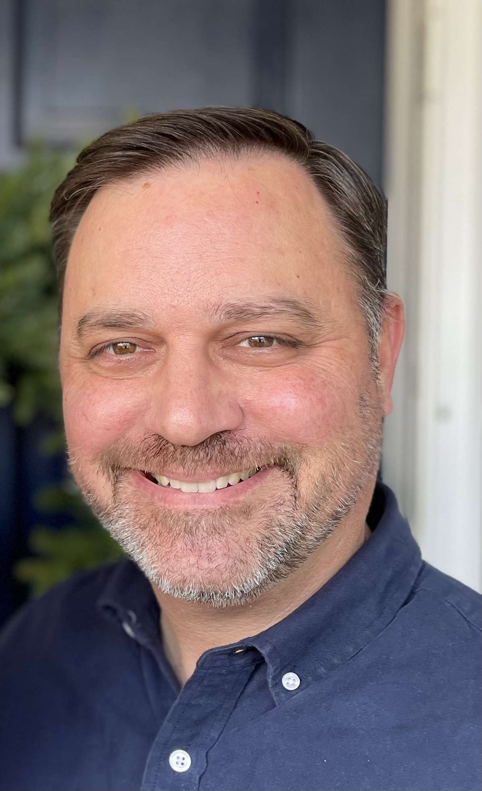

Talk Title: Information in images for drug discovery: image-based profiling
Speaker:
Anne E. Carpenter, Ph.D., Broad Institute of Harvard and MIT.
Abstract: Cell images contain a vast amount of quantifiable information about the status of the cell: for example, whether it is diseased, whether it is responding to a drug treatment, or whether a pathway has been disrupted by a genetic mutation. We extract hundreds of features of cells from images. Just like transcriptional profiling, the similarities and differences in the patterns of extracted features reveal connections among diseases, drugs, and genes. Improving this pipeline is an active area of research, from feature extraction to batch correction to quality control to assessing similarities.
We are harvesting similarities in image-based profiles to identify, at a single-cell level, how diseases, drugs, and genes affect cells, which can uncover small molecules’ mechanism of action, discover gene functions, predict assay outcomes, discover disease-associated phenotypes, identify the functional impact of disease-associated alleles, and find novel therapeutic candidates. As part of the JUMP-Cell Painting Consortium (Joint Undertaking for Morphological Profiling-Cell Painting) we are aiming to establish experimental and computational best practices for image-based profiling (https://jump-cellpainting.broadinstitute.org/results) and produce the world’s largest public Cell Painting gene/compound image resource, with 140,000 perturbations in five replicates, to be released November 2022. With these data and new technologies like Pooled Cell Painting and variants of the assay like LipocyteProfiler and CardioProfiler, we hope to bring drug discovery-accelerating applications to practice.
Speaker Bio:
Anne Carpenter is senior director of the Imaging Platform at Broad Institute of MIT and Harvard, where she is also an institute scientist. With a strong background in cell biology, microscopy, and computational biology, her expertise is in developing and applying methods for extracting quantitative information from biological images, especially in a high-throughput manner.
Carpenter directs a team of biologists and computer scientists in developing image analysis and data exploration methods and software that are open source and freely available to the public. She and her team developed CellProfiler, the first open-source, high-throughput cell image analysis software. Carpenter is now a pioneer in image-based profiling, the extraction of rich, unbiased information from images for drug discovery, and functional genomics. She collaborates with dozens of biomedical research groups around the world to use image analysis to identify disease states, therapeutic potential, and gene function from microscopy images.
Carpenter is an NIH MIRA investigator, an NSF CAREER awardee, and has received recognition and research funding from numerous other groups including the Human Frontiers in Science program and the Howard Hughes Medical Institute. She was recently named to the top-100 list of AI Leaders in Drug Discovery and Healthcare by Deep Knowledge Analytics, and she is an honorary fellow of the Royal Microscopical Society.
Carpenter earned her B.S. from Purdue University and her Ph.D. from the University of Illinois at Urbana-Champaign.
Talk Title:Deep Learning for bright field image analysis
Speaker:
Kaupo Palo, Ph.D., PerkinElmer.
 Abstract:
Abstract: Common fluorescence microscopes come with the capability to acquire images in bright field. While fluorescence is a powerful method to extract information on cellular pathways, bright field is a universal label free imaging method having its strength when less invasive method is needed. It is ideal for measuring live cell cultures in dynamics like stem cells, and cardiomyocytes. The drawback of bright field is significantly more complex image structure, susceptibility to artifacts, and less specific signal compared to multichannel fluorescence readouts. We will discuss the possibilities opened by Deep Learning for bright field cellular image analysis.
Speaker Bio:
Kaupo Palo studied physics at Tartu University, Estonia. He received his PhD in theoretical physics in Uppsala University, Sweden in 1994. Kaupo held his position as post-doctoral fellow in CERN, Geneva in 1994-1996. Shortly after he joined Hamburg based biotech company Evotec to contribute to the technologies based on single molecule spectroscopy. While the pharmaceutical industry and research turned more towards cellular microscopy, the company started producing microscopes for high content screening. From 2007 he joined PerkinElmer through acquisition. Kaupo's work became more focused on image processing and image analysis.
He contributed in areas of microscope design such as designing pinhole pattern of Nipkow disks, using Penrose tiling for image registration, designed methods for image processing such as digital phase contrast, shading correction, and designed pipelines for image analysis from segmentation to quantitation. In recent years he has investigated opportunities offered by Deep Learning in areas of image processing, object segmentation and classification.
Talk Title: Traditional and Deep Learning Models of Cellular Structure
Speaker:
Robert Murphy, Ph.D., Carnegie Mellon University.
Abstract: A major challenge in computer vision applications in microscopy is creating accurate models of cell structures. Cells have a higher degree of stochasticity and a larger number of components than most subjects of computer vision applications, even higher than other natural objects like plants and animals, complicating use of both traditional and deep learning methods. Most cellular components are distinct objects with defined boundaries that do not overlap. Thus challenges include not only segmentation and scene parsing but also construction of generative models that are object-based. Our work on this subject using traditional methods introduced the idea of constructing objects whose position within the cell was conditional upon other parts, such as the cell membranes, nuclear membranes and microtubules. With the advent of deep learning and the creation by the Allen Institute of large 3D image collections in which particular organelles were fluorescently-labeled, a significant advance occurred through the creation of conditional autoencoder models for organelles. A second advance occurred with using a U-net approach to make these models to all be conditional upon a common reference, unlabeled image, which allowed the relationships between different organelles to be at least partially inferred. We have developed an alternative GAN-based approach and have evaluated how well both models preserve the expected property that organelles do not overlap. We then developed a modified loss function that allows retraining of the models to minimize that overlap. We have also developed approaches using our object-based modeling system to evaluate how well synthetic images capture object shape and spatial distribution.
Speaker Bio:
Robert F. Murphy is Professor of Computational Biology Emeritus in the School of Computer Science at Carnegie Mellon University. He was the Ray and Stephanie Lane Professor of Computational Biology and Professor of Biological Sciences, Biomedical Engineering, and Machine Learning at Carnegie Mellon until his retirement in May 2021. He founded the Computational Biology Department in the School of Computer Science and served as its head from 2009 to 2020. He is a Fellow of the IEEE and of the American Institute of Medical and Biological Engineering.
Dr. Murphy’s career has centered on combining cell measurements with quantitative and computational methods. In the mid 1990’s, his group pioneered the application of machine learning methods to high-resolution fluorescence microscope images depicting subcellular location patterns, and was the first to demonstrate superior machine performance in interpreting diverse patterns in biological images compared to human interpretation. His main areas of focus are computer vision methods for biomedical image analysis and AI systems for autonomously driving closed-loop experimental science campaigns.
Talk Title:Adaptation of Digital Pathology to Tissue Microdissection
Speaker:
Michael Tangrea, Ph.D., Loyola University.

Abstract: Digital pathology applications have increased dramatically over the past five years, with several clinically validated image analysis tools now making an impact on patient care. Yet, some microscope-based technologies, such as laser microdissection have been slow to embrace these innovative solutions. Working with a group of collaborators, we adapted several image analysis tools: probabilistic pairwise Markov model (PPMM), ImageJ, spatially invariant vector quantization (SIVQ), and eSeg into the microdissection workflow. Using both the ThermoFisher Scientific ArcturusXT and Leica LMD7000 microdissection platforms, we developed protocols to incorporate these image analysis tools to isolate specific targets within the heterogenous tissue section. This new approach has been coined “computer-aided laser dissection” or “CALD”. Although at an early-stage, the method may facilitate both research projects and clinical applications in the future.
Speaker Bio:
Dr. Tangrea is an Endowed Professor in the Biology Department at Loyola University Maryland. He also works closely with the Center for Innovation and Entrepreneurship. Dr. Tangrea is a translational researcher who specializes in the development of novel pathology technologies that facilitate improved biomolecular analysis of tissue specimens for translational research, tissue diagnostics and precision medicine.
He is the inventor on multiple patents and author of over 40 scientific publications and
invited speaker to diverse, technical audiences. He is the Co-Founder of BioNavigators (formerly the Mid-Atlantic Biology Research and Career [MABRC] Network) and is a Mentor to Life Science start-ups.
Talk Title: Towards AI-driven Cancer Data Integration: Perspectives from Histopathology and Molecular Profiles
Speaker:
Mu Zhou, Ph.D., Stanford University.

Abstract: The interplay of digital histopathological images and molecular data offers new perspectives to advance clinical decision making in cancer. In this talk, I will highlight the recent surge of histopathology-based AI analytics for predicting multiple cancer molecular outcomes. First, I will present recent deep-learning works on linking whole slide images and important mutational outcomes in breast cancer and its validations across cancer types. We provide an image-to-genomics pipeline to allow a head-to-head comparison between mutations and biological pathway signals by leveraging public cohorts. Second, I will share our research progress on developing graph-based deep learning classifiers to predict genetic mutations in colon cancer. Finally, ongoing data challenges, limitations, and research opportunities will be discussed in related areas.
Speaker Bio:
Dr. Mu Zhou is interested in machine learning, medical image analysis, and bioinformatics. Dr. Zhou serves as head for AI drug discovery at SenseBrain research, San Jose. He develops data-centered approaches to analyze and process quantitative information from multi-scale biomedical data across radiology, histopathology, and omics profiles in oncology. These findings enable early detection of disease, outcome prediction, and medical decision support for patients. He was a research scientist and a postdoctoral fellow at medical school, Stanford University. In collaboration with his colleagues, he led the research for linking cancer imaging and high-throughput RNA expression in lung cancer. He received his Ph.D. degree in computer science and engineering from University of South Florida, Tampa, where he pioneered radiomics analysis for non-invasive outcome prediction of cancer patients.